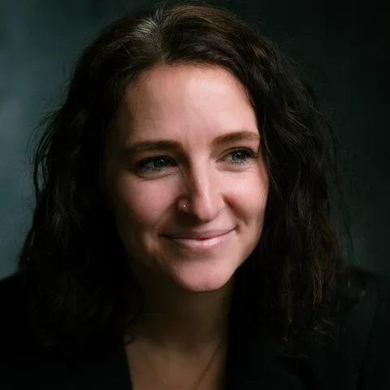
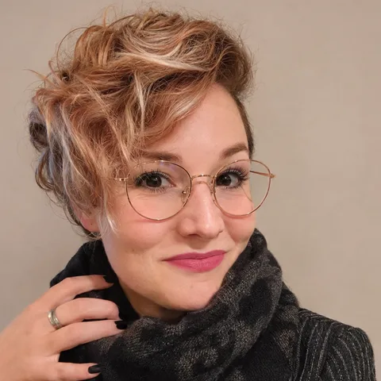
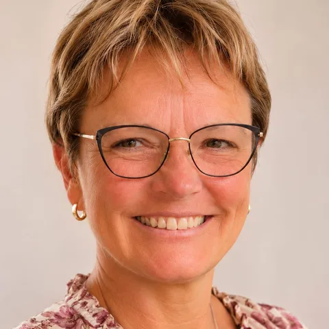
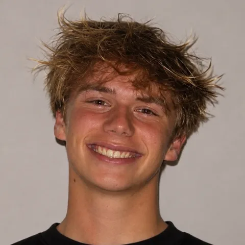
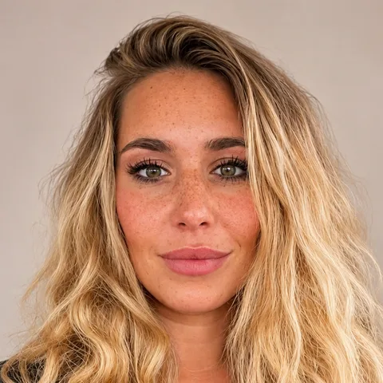
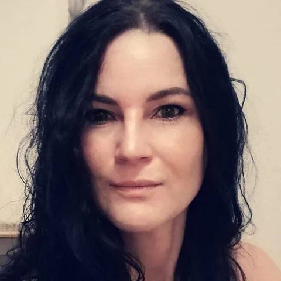
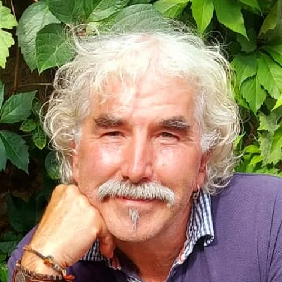
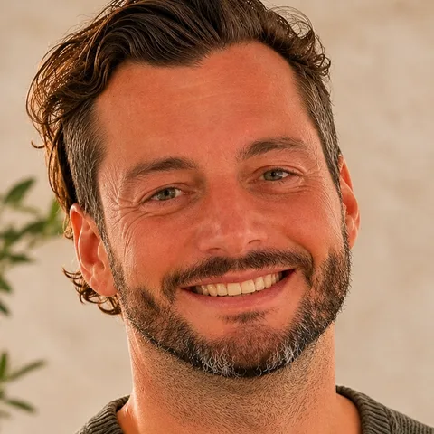

Das Team hinter Malva








Natascha Helbig
Gründerin · Vorsitzende · Vergabeausschuss (geplant)
„Hi, ich bin Natascha. Malva ist aus meinem Herzen entstanden. Schon immer war es mein Traum, Menschen zu helfen. Ich möchte, dass jeder, der es braucht, Zugang zu Hilfe bekommt. Mentale Gesundheit darf kein Privileg sein. Wir alle haben ein erfülltes Leben verdient und dafür kämpfe ich jeden Tag.“
Jennifer Rebelein
Vorstand · Stellvertretende Vorsitzende (geplant)
„Hi, ich bin Jenny. Als Physiotherapeutin habe ich jahrelang in der Psychiatrie gearbeitet und dort habe ich eines gelernt: Wer Hilfe braucht, hat sie verdient. Egal, wer du bist. Ich schaue nicht zu, wenn Menschen allein gelassen werden. Deshalb bin ich bei Malva, aus voller Überzeugung.“
Christine Franz
Vorstand · Kassenwartin · Vergabeausschuss (geplant)
„Hi, ich bin Tina. 35 Jahre lang war ich leitende Arzthelferin (MFA) und ich weiß, wie schwer es ist, einen Therapieplatz zu bekommen. Das darf nicht so bleiben. Bei Malva kümmere ich mich um die Kasse und bin mit vollem Herzen dabei, damit jeder Zugang zu mentaler Gesundheit erhält.“
Marco Kraft
Gründungsmitglied
„Hi, ich bin Marco, 20 Jahre alt. In meinem Umfeld sehe ich, wie wichtig es ist, dass gerade junge Menschen früh Hilfe bekommen. Damit man nicht so viel Zeit mit Gedanken verliert, die man am Ende gar nicht braucht. Dafür setze ich mich bei Malva ein, für alle jungen Menschen.“
Natascha Pusch
Gründungsmitglied
„Hi, ich bin Natascha. Ich bin dabei, weil ich fest daran glaube, dass jeder Mensch die Hilfe bekommen sollte, die er braucht. Niemand sollte in schweren Zeiten allein bleiben, nur weil das Geld fehlt. Malva ist für mich eine Herzensangelegenheit und ich unterstütze den Verein, wo ich nur kann.“
Christina Schifferer
Gründungsmitglied
„Hi, ich bin Christina. Ich weiß, wie viel es bedeutet, im richtigen Moment Unterstützung zu bekommen. Hilfe muss genau dort ankommen, wo sie gebraucht wird und zwar für jeden. Mit Malva möchte ich dazu beitragen, dass niemand warten muss, bis es zu spät ist.“
Helmut Vohl
Gründungsmitglied
„Hi, ich bin Helmut, der alte Hase im Team. Ich habe in meinem Leben gelernt: Mit Optimismus und Zusammenhalt lässt sich fast alles schaffen. Ich glaube fest an die Menschen und daran, dass wir mit Malva wirklich etwas bewegen können. Dafür bin ich mit ganzem Herzen dabei.“
Florian Wittmann
Gründungsmitglied
„Hi, ich bin Florian. Ich weiß aus eigener Erfahrung, wie schwer der Weg sein kann, wenn es einem psychisch nicht gut geht. Umso mehr freue ich mich, dass Menschen mit Malva endlich die Hilfe bekommen können, die sie brauchen. Genau deshalb bin ich von Anfang an dabei.“
Du möchtest Teil von Malva werden?
Schreib uns eine DM oder an info@malva-ev.de